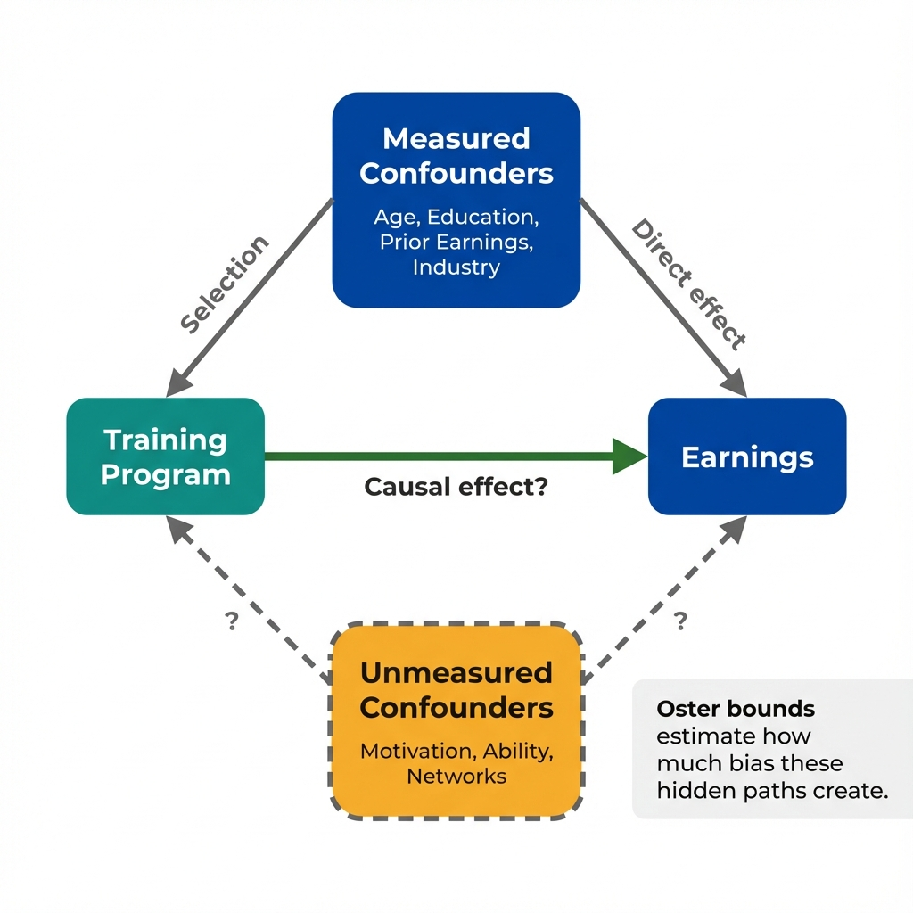

The Data
A researcher claims that a job training program increases earnings by $2,800 per year. The regression table below shows the treatment effect with different control variables. The coefficient stays statistically significant across specifications. (Data are simulated for illustration.)
| Variable | Model 1 | Model 2 | Model 3 | Model 4 |
|---|---|---|---|---|
| Training Program | 4,200*** | 3,400*** | 2,950*** | 2,800*** |
| Age | - | 145*** | 128*** | 122*** |
| Education (years) | - | 890*** | 720*** | 685*** |
| Prior Earnings | - | - | 0.42*** | 0.38*** |
| Industry Fixed Effects | No | No | No | Yes |
The coefficient shrank when we added measured confounders.
What does this pattern tell us about unmeasured confounders?
Coefficient Changes
Watch how the treatment coefficient shrinks as we add control variables. Each bar represents a model specification. The pattern of movement reveals information about potential bias from factors we have not measured.
We controlled for everything in our dataset.
But how do we assess what unmeasured factors might do?
Oster Bounds
Emily Oster developed a method to ask: if unmeasured confounders are as important as measured ones, what would the true effect be? This gives us a bound on how wrong our estimate could be.
What Are Oster Bounds?
Oster bounds use the movement in coefficients and the change in R-squared when adding controls to estimate what would happen if we could control for everything.
The method assumes unmeasured confounders have similar predictive power as measured ones. If true, we can calculate:
- The key parameter is delta: the ratio of selection on unobservables to selection on observables
- If delta = 1, unmeasured confounders are equally important as measured ones
- We calculate what delta would need to be to make the effect zero

Measured controls removed some bias. Oster bounds estimate how much bias remains.
We have the framework. Now let's apply it.
How robust is the $2,800 effect to different assumptions about unmeasured confounding?
Sensitivity Analysis
Adjust the parameters below to see how the bias-corrected estimate changes. The goal: find what assumptions would overturn the finding, then judge whether those assumptions are plausible.
Key Insight
Sensitivity analysis does not prove causation. It quantifies how wrong you could be under different assumptions about what you did not measure. This shifts the debate from "Is there confounding?" to "How much confounding is plausible?"
What You Learned in This Lab
When to Use Sensitivity Analysis
Sensitivity analysis is most valuable when:
- You have observational data without a natural experiment
- Randomization was not possible or was imperfect
- Reviewers or policymakers question unmeasured confounding
- You want to move beyond "we controlled for X" to "here's what it would take to overturn our finding"
It does not eliminate the need for strong identification. It helps you communicate the limits of your evidence.
Key Takeaway
Controlling for observed variables is not enough. The question is not whether unmeasured confounding exists. It almost certainly does. The question is whether it is strong enough to overturn your finding. Oster bounds and similar methods let you answer: "How much unmeasured confounding would flip this result?" When the answer is "an implausible amount," your evidence is more credible. When it is "not very much," you know where your analysis is vulnerable. This is what economists mean by quantifying identification assumptions.